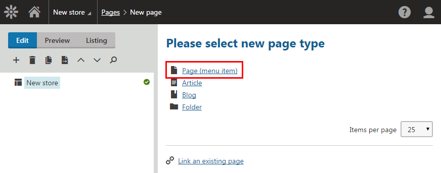
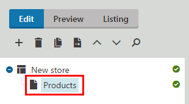
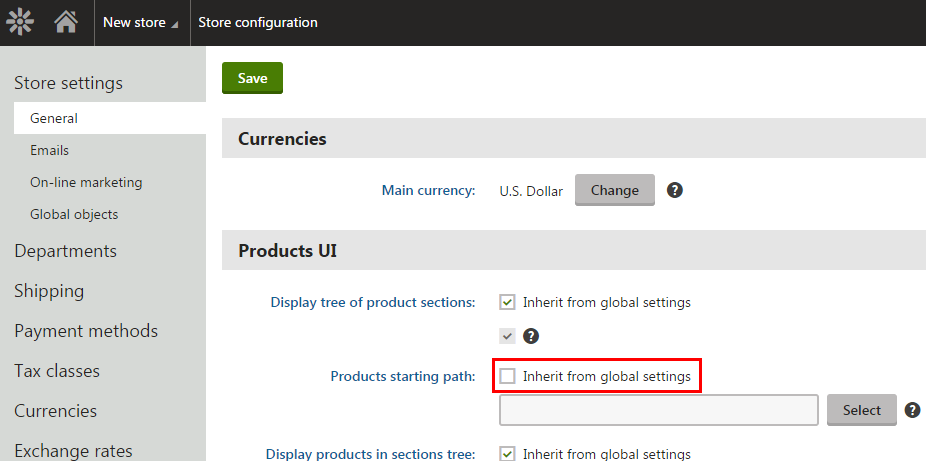
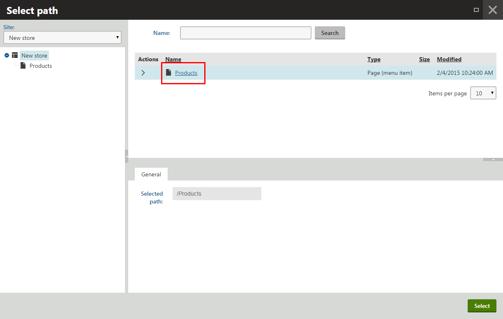
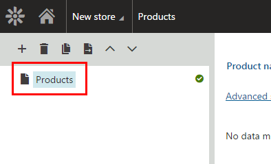
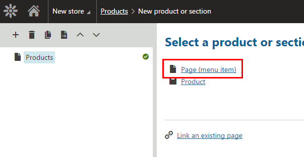
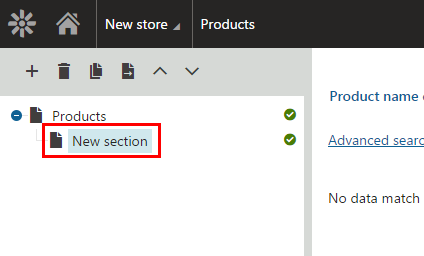

Configuring product structure
During the store configuration, you need to specify what page is the main page of the store (in other words, where the product tree starts) and we recommend that you define category structure of your products. Defining of the product structure will help you later when you import your products to the system.
To configure product page structure:
Specifying the product tree main page
When you specify the product tree main page, the Products application displays just products. To specify the main page of the tree:
Create a page in the Pages application.
Find detailed information in Creating new pages. In a nutshell:Open the Pages application.
Click New (
 ) to create a page.
) to create a page.Click Page (menu item).

_
Selecting a page type
_Type a name of the page to the Page name field (for example Products).
Choose a template according to your needs.
Click Save.
The system creates a new page.

_
A new page
_Set the main page of the product tree.
Open the Store configuration if you want to set the product tree on the current site or open the Multistore configuration if you want to set the tree globally.
If you are not sure what to choose, see Choosing site or global e-commerce configuration. If you are not sure about specifics of configuring in these applications, see Configuring e-commerce settings for a specific site or globally.
On the Store settings -> General tab, configure the Display tree of product sections field.
If you work in the Store configuration application, clear the Inherit from global settings field.
Select the check-box below to display the product section tree.
Clear the field if you plan to use stand-alone SKUs and you do not want to place the products into any logical sections.
Configure the Products starting path field.
If you work in the Store configuration application, clear the Inherit from global settings field.

_
Clearing the inheriting property
_Click Select in the Products starting path field.
In the Select path dialog, select the page created in the previous step and click Select.

_
Selecting path of the product tree main page
_
Configure the Display products in sections tree field.
If you work in the Store configuration application, clear the Inherit from global settings field.
Select the Display products in sections tree check-box to display products in the section tree.
Clear the field if you do not want to see the products in the product tree in the Products application but only in the listing of each section.
Save the store configuration.
The system sets the main page of the product tree. If you now open the Products application, you will see that the main page is the page you just selected.

The main page of the Products application
-
Configuring product structure
Defining the product structure
Create the product structure to easily import products into the desired position in the product tree. Repeat the following steps to achieve the structure you want.
Defining a new store section
To define a new store section:
Open the Products application.
Navigate to the section in which you want to create a new sub-section.
Click New (
 ).
).Click Page (menu item).

_
Selecting a section type
_Type a section name.
(Optional) Enter when the section will be published to the Published from and Published to fields.
Leave the fields blank to permanent publishing.
Click Save (or Save and create another if you want to immediately create another section).
The system creates a new sub-section in the selected section.

The newly created section
Limiting the products users can create
You can set page types that can be used for child pages based on the product tree structure of your online store.
You can also set page types that can be used for child pages based on the used page type for the parent page. See more information in Configuring product page types.
Use this setting, for example, when you want to set that only pages of the Brewers page type can be created in /Store/Brewers.
To limit child pages according to the product tree structure:
Open the Page types application.
Switch to the Scopes tab.
Click New scope.
In This scope covers, click Select.
This opens the Select path dialog.
Select the path which will be then limited, and click Select.
In Page types category, click Add page types.
This opens the Select page types dialog.
Select the page types which will be allowed under the specified page, and click Select.
(Optional) Enter the other properties according to your requirements.
Click Save.
On the specific page, users are now able to create only pages of the selected page type.
See more detailed information about limiting the pages users can create in Limiting the pages users can create.